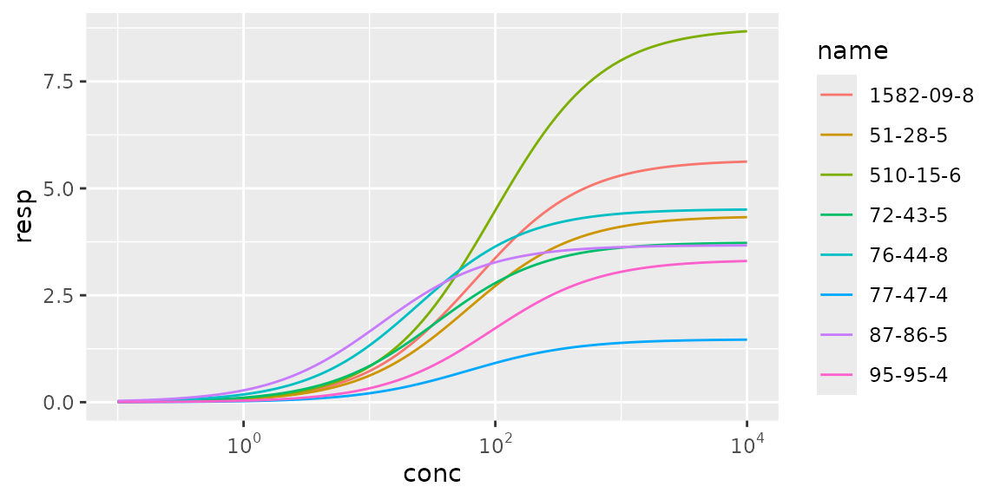
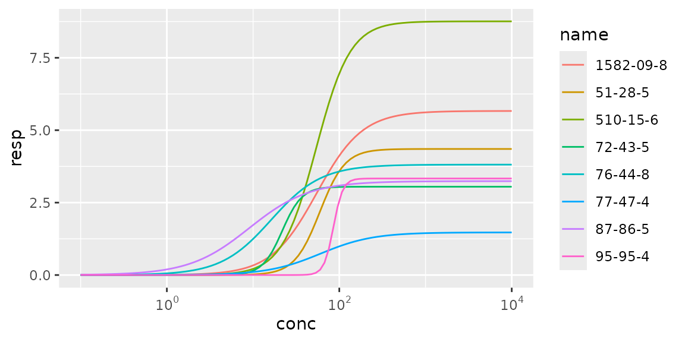
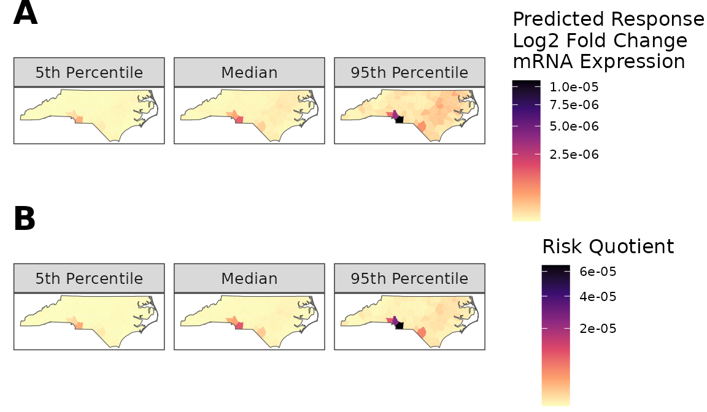
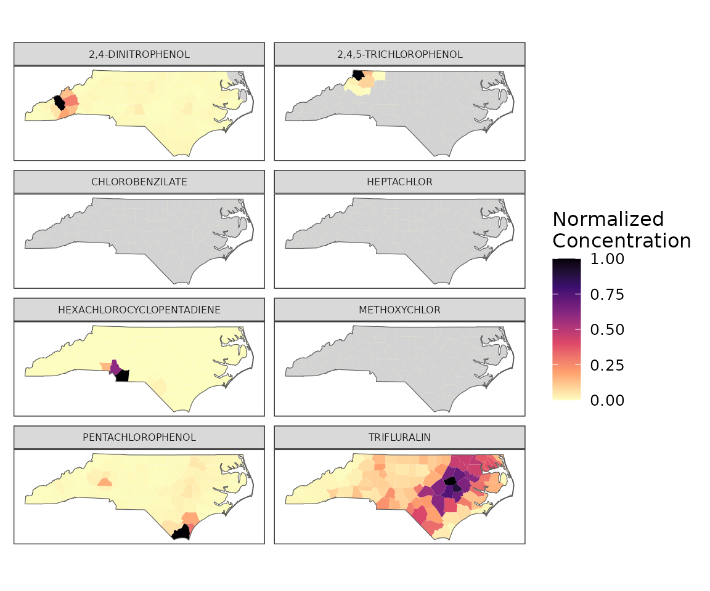

GeoTox Introduction
introduction.RmdThis vignette covers basic use of package functions. Package data,
geo_tox_data, is used throughout the examples and details
on how it was created can be found in the “GeoTox Package Data”
vignette.
library(GeoTox)
library(dplyr, warn.conflicts = FALSE)
library(tidyr)
library(ggplot2)
library(scales)
library(sf)
#> Linking to GEOS 3.10.2, GDAL 3.4.1, PROJ 8.2.1; sf_use_s2() is TRUEFit Hill model
Split dose response data into a list by chemical casn and then apply
the fit_hill function to each of the chemicals. Note that
estimates of tp.sd and logAC50.sd that are
NA will be replaced with the corresponding tp
and logAC50 values. This imputation will be indicated by
setting tp.sd.imputed and logAC50.sd.imputed
to TRUE.
data <- split(geo_tox_data$dose_response, ~casn)
hill_2_params <- fit_hill(data)
hill_3_params <- fit_hill(data, fixed_slope = FALSE)Plot fits
plot_hill <- function(fit_params) {
log10_x <- seq(-1, 4, length.out = 100)
y <- apply(fit_params, 1, function(par) {
tp <- as.numeric(par["tp"])
logAC50 <- as.numeric(par["logAC50"])
slope <- as.numeric(par["slope"])
tp / (1 + 10^(slope * (logAC50 - log10_x)))
})
colnames(y) <- fit_params$name
as_tibble(y) %>%
mutate(conc = 10^log10_x, .before = 1) %>%
pivot_longer(!conc, values_to = "resp") %>%
ggplot(aes(conc, resp, color = name)) +
geom_line() +
scale_x_log10(labels = scales::label_math(10^.x, format = log10))
}
plot_hill(hill_2_params)
plot_hill(hill_3_params)
Simulate Data
# Age
age <- simulate_age(split(geo_tox_data$age, ~FIPS), n = MC_iter)
# Obesity status
obesity <- simulate_obesity(geo_tox_data$obesity, n = MC_iter)
# Inhalation rate
IR <- simulate_inhalation_rate(age)
# External exposure concentration
C_ext <- simulate_exposure(split(geo_tox_data$exposure, ~FIPS), n = MC_iter)
# Sample from pre-simulated steady-state plasma concentration data
C_ss <- sample_Css(geo_tox_data$simulated_css, age, obesity)Calculations
# Internal dose
D_int <- calc_internal_dose(C_ext, IR, scaling = 1 / 1000)
# in vitro concentration
C_invitro <- calc_invitro_concentration(D_int, C_ss)
# Concentration response
resp <- calc_concentration_response(C_invitro, hill_2_params)Plots
resp_df <- tibble(
FIPS = names(resp),
data = resp
) %>%
unnest(cols = data) %>%
pivot_longer(-FIPS, names_to = "health_measure") %>%
mutate(
health_measure = factor(
health_measure,
levels = c("GCA.Eff", "IA.eff", "GCA.HQ.10", "IA.HQ.10")
)
) %>%
# Compute summary stats
summarize(
median = median(value , na.rm = TRUE),
quantile_05 = quantile(value, 0.05, na.rm = TRUE, names = FALSE),
quantile_95 = quantile(value, 0.95, na.rm = TRUE, names = FALSE),
.by = c(FIPS, health_measure)
) %>%
pivot_longer(
cols = c(median, quantile_05, quantile_95),
names_to = "stat"
) %>%
# Order stats
mutate(
stat = factor(stat, levels = c("quantile_05", "median", "quantile_95"))
) %>%
# Add county boundaries
left_join(geo_tox_data$boundaries$county, by = join_by(FIPS)) %>%
st_as_sf()
make_county_heatmap <- function(df, legend_name) {
ggplot(df, aes(fill = value)) +
# Plot county data using fill, hide county borders by setting color = NA
geom_sf(color = NA) +
# Add state borders
geom_sf(data = geo_tox_data$boundaries$state, fill = NA, size = 0.15) +
# Create separate plots for each stat
facet_wrap(
~stat,
ncol = 3,
labeller = labeller(
stat = c(
"quantile_05" = "5th Percentile",
"median" = "Median",
"quantile_95" = "95th Percentile"
)
)
) +
# Add fill scale
scale_fill_viridis_c(
name = legend_name,
direction = -1,
option = "A",
trans = "sqrt"
) +
# Theme
theme_bw() +
theme(
text = element_text(size = 12),
legend.text = element_text(size = 8),
axis.ticks = element_blank(),
axis.text = element_blank(),
panel.grid.major = element_blank(),
panel.grid.minor = element_blank()
)
}
GCA_Eff_plot <- make_county_heatmap(
resp_df %>% filter(health_measure == "GCA.Eff"),
paste("Predicted Response", "Log2 Fold Change", "mRNA Expression",sep = "\n")
)
HQ_10_plot <- make_county_heatmap(
resp_df %>% filter(health_measure == "IA.HQ.10"),
"Risk Quotient"
)
ggarrange(
GCA_Eff_plot , HQ_10_plot,
labels = c( "A", "B"),
vjust = 1,
align = "v",
nrow = 2,
font.label = list(size = 20, color = "black", face = "bold"),
common.legend = FALSE
)
exposure_df <- geo_tox_data$exposure %>%
left_join(hill_2_params, by = join_by(casn == name)) %>%
left_join(geo_tox_data$boundaries$county, by = join_by(FIPS)) %>%
st_as_sf()
ggplot(exposure_df, aes(fill = norm)) +
geom_sf(color = NA) +
facet_wrap(~chemical, ncol = 2) +
# Recolor subset as light grey
geom_sf(
data = exposure_df %>% filter(mean == 0),
fill = "light grey",
color = "light grey",
lwd = 0.01
) +
# State borders
geom_sf(data = geo_tox_data$boundaries$state, fill = NA, size = 0.15) +
scale_fill_viridis_c(
name = "Normalized\nConcentration",
direction = -1,
option = "A"
) +
theme_bw() +
theme(
axis.ticks = element_blank(),
axis.text = element_blank(),
strip.text = element_text(size = 6),
text = element_text(size = 12),
panel.grid.major = element_blank(),
panel.grid.minor = element_blank()
)